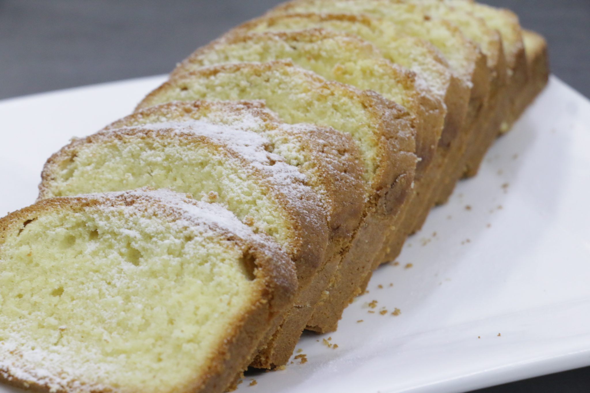

変わらない、3つの手間
早さよりも、丁寧さを選びました。PonoLeaCoffeeが大切にしている3つのことをご紹介します。
二度のハンドピック
生豆を選び、焙煎したあとにもう一度選び直す。手間を惜しまない二度の手仕事です。
色や形を一粒ずつ見極めることで、雑味のない澄んだ一杯に近づけています。時間はかかりますが、省きたくない工程です。
バッハ式、一杯ずつのドリップ
三谷バッハで修行した店主が、基本のバッハ式で一杯ずつ丁寧に抽出します。
カウンターに立てば、豆の個性や淹れ方について気さくに話してくれる時間も楽しみのひとつです。
14種から選ぶ楽しさ
オリジナルブレンドから浅煎り・深煎りまで、14種類を揃えています。
どれにしようか迷う時間も、また来ようと思える時間も、ここでは心地よい一部です。
An Evening Light
広場に、小さな灯りが点る頃
初冬の夕方、通りからひとつ奥まった広場に、小さなランプが灯り始めます。その灯りの中に、店の明かりがそっと浮かぶ時間。香り立つ一杯とともに、今日はどれを飲もうか、と考える静かなひとときが待っています。
お客様の声より
★★★★★
「マスターの落ち着きが、店の落ち着きに繋がっている気がします。コーヒーは14種類。どれを選ぼうか迷うのも楽しい時間です。」
★★★★★
「生豆のハンドピック、焙煎後のハンドピックと、2回も手間を惜しまず行っているお店です。」
コーヒーと、もうひとつの楽しみ
しっとりとしたパウンドケーキなど、コーヒーに寄り添う軽食もご用意しています。好みの一杯に合わせて選んでいただくのもおすすめです。外のテーブルで過ごすカフェタイムも、気持ちのよい時間になります。

広場に面した、小さな店へ
通りから少し奥まった、広場に面した場所にあります。営業時間は現在ご確認中ですが、足を運んでいただければ、カウンター越しに静かな時間をご案内します。